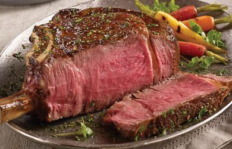

Ribeye Steak
Home

Description:
A ribeye steak is renowned for its rich, buttery flavor and tender texture,
thanks to its generous marbling. Cut from the upper rib cage, specifically
between the sixth and twelfth ribs, this area of the cow doesn't do much work,
which contributes to the meat's exceptional tenderness. The steak's signature
"eye" is a pocket of fat that melts into the meat during cooking, creating a juicy,
succulent experience with every bite. While it has a higher fat content than leaner
cuts like sirloin, the ribeye is prized by steak lovers for its perfect balance
of robust, beefy flavor and melt-in-your-mouth feel.
- 2 ribeye steaks - 1 pound each, 1.5-inch thick
- 2 teaspoons Diamond Crystal kosher salt
- ½ teaspoon black pepper - freshly ground
- 2 tablespoons butter
Steps:
- Preheat the oven to 500°F. Blot the steaks dry with paper towels. Keeping their surface dry will help create a good crust.
- Season the steaks on both sides and the fatty edge with kosher salt and black pepper.
- Heat a well-seasoned cast-iron skillet over high heat until it's smoking. If the skillet is well-seasoned, there's no need to add any oil.
- Add the steaks to the skillet and cook them for 2 minutes per side. If the skillet gets overheated, lower the heat to medium-high, but generally speaking, you want it super-hot.
- Cook the steaks' edges for about 30 seconds per edge
- Very carefully, using oven mitts, transfer the hot skillet to the preheated oven. Leave it there for about 3 minutes for medium-rare steaks or 5 minutes for medium-done steaks.
- Transfer the steaks to a warm plate and loosely cover them with foil to keep them warm. Let them rest for 5 minutes, then top them with butter and serve.